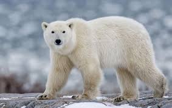
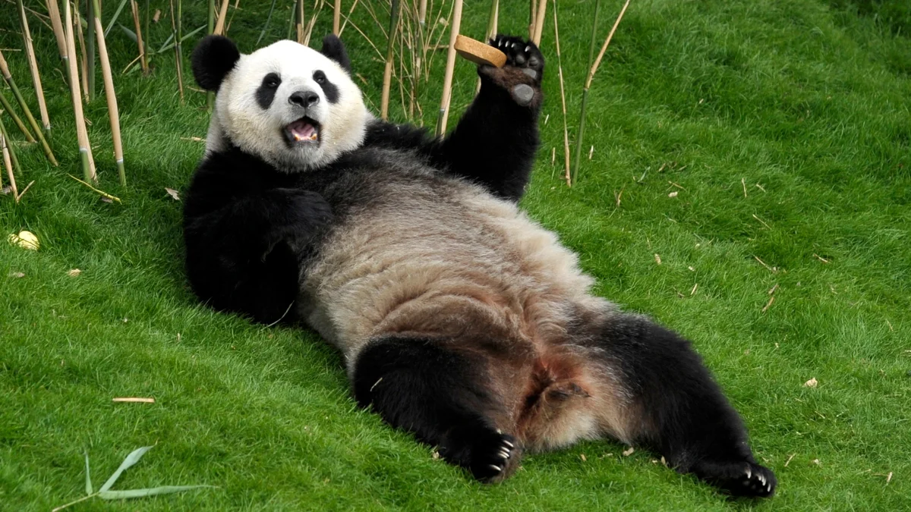
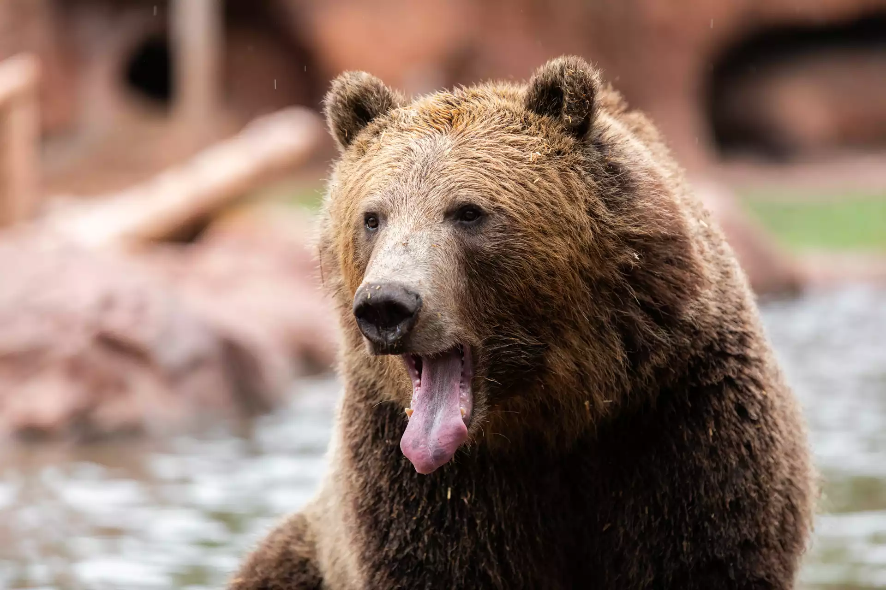
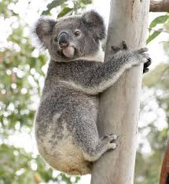

Explore the world of bears, one species at a time!
Polar bears are native to the Arctic Circle and are known for their thick white fur, which helps them blend into their snowy environment. They are excellent swimmers and rely on sea ice to hunt for seals.
Also known as the giant panda, these bears are beloved for their distinctive black-and-white markings and their love of bamboo. They are native to the mountain ranges of central China.
Grizzly bears are a subspecies of the brown bear and are found in North America. They are known for their immense size, strength, and the hump on their shoulders.
While not technically a bear, koalas are often referred to as "koala bears." These marsupials are native to Australia and are known for their eucalyptus diet and sleepy demeanor.
